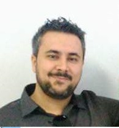

Desenvolvedor Web | Téc. Eletrônico | Pesquisador
Educador - 2015 até o presente
Ensino de eletrônica, programação, impressão 3D edemais habilidades da Cultura Maker, com foco naformação de docentes e profissionais. Desenvolvi diversos projetos, como: - Cockpit Para simulador de voo para escola de aviação. - IOT para monitoramento de umidade de solo via App(para o Agronegócio). - IOT monitor de nível das águas de rio para estudos noPantanal. - Aguardando o Registro de Patente de um produto paraensino de lógica de programação.
Téc. Eletrônico - 2008 a 2016
Manutenção e calibração de balanças, durômetros,chillers, tituladores automáticos, refratômetros digitais eanalógicos, phmetros, destiladores de proteína,analisadores de ponto de congelamento, densímetros eespectrofotômetros.
Análise e Desenvolvimento de Sistemas - 2011 a 2015
CENTRO UNIVERSITÁRIO LEONARDO DA VINCI (UNIASSELVI)
Mestrado em Informática na Educação - 2017 a 2023
INSTITUTO FEDERAL DE EDUCAÇÃO, CIÊNCIA E TECNOLOGIADO RIO GRANDE DO SUL (IFRS)
(51) 99176-6336
welausen@gmail.com